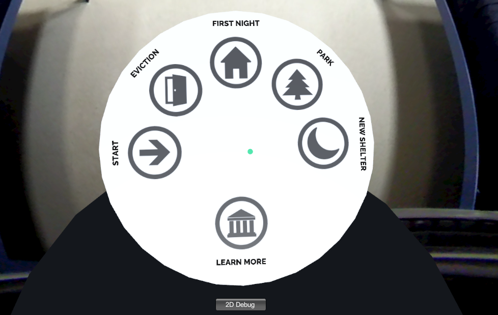

Aaron created a new choice scene interaction, including the rendered phone and the gaze-controlled buttons. He also edited and inserted the narration clips for this portion. Alison looked into the video distortion issues and stitched together the new shorter audio clips for the eviction and non-emergency shelter scenes. Amy refilmed some of the eviction scenes and finalized the museum scene. Erika shortened and re-recorded our narration, created the handout we’ll give on demo day, and stitched together the emergency shelter and park scenes.
We updated our menu a bit to be easier to use:

As usual our code updates are pretty boring, and can be found in our repo.
The image we sent to use for the presentation promo:

We got a lot of good feedback from this weeks demo day. The general idea isn’t changing much, but we have a lot of polish to do. We have to refilm a few scenes, update some of our audio to be more immersive, and rethink the narrative on a couple scenes. More details are below in our plan for next week.
Aaron will change the structure of our project to a single scene to avoid the loading screen between the scenes. He will also normalize the audio and add more music throughout the experience, since we got really positive feedback on that! Alison will work on fixing the distortion of the videos. She figured out that adding a padding of black pixels at the top helped fix the distortion, but couldn’t export a video at high enough resolution with the software she was using. Aleks is going to send us information to get Adobe Premiere, and is meeting with Alison with an idea on how to fix the distortion issues. Amy will make a map of Seattle shelters to put in the museum scene. She will also fix the aspect ratio of the videos in the museum, and insert our new content into the museum. Lastly, she will record a new video outside her apartment and will refilm the computer scene in her apartment. Erika will re-record some of the audio that now feels too rushed, film a video to use if a user chooses to cover their coworker’s shift, and make a new slide for the acknowledgements in the museum scene.
There are a ton of small things we didn’t list here that we’ll just pick up as we go. We have no blocking issues other than the trouble we’ve been having with the video distortion, which Aleks is helping us with!